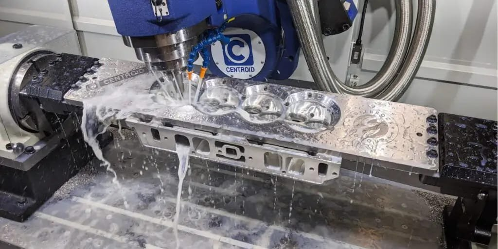

Section 07 • Root Cause Analysis
Intelligent Diagnostic Assistant synthesizes context · Actionable Insights recommend solutions · Interactive Chatbot provides natural language assistance
Panel 01 / Vision Model Output

CRACK | 94.2%
Severity
High
Class
Hairline
Verdict
Not OK
Detection output: Precise location and class identified, but lacks root cause explanation.
Panel 02 / GenAI Diagnostic Assistant
Analyze the detected crack on part #17890 and provide a diagnosis.
● Root Cause Diagnostic
The hairline crack pattern indicates high thermal stress during casting cooling — material integrity is compromised at the flange radius.
✓ Recommended Action
Audit the conveyor cooling speed and mold temperature immediately. Flag this batch for re-inspection.
Ask the assistant about defect trends, batches, or corrective actions…
09